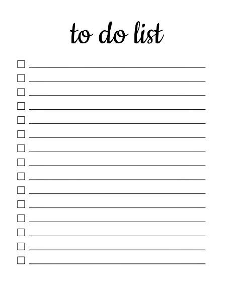

To-do List
Use this app to write down the list of that you need to do, it will help you to organize your life.
Go to To-do List app!Task Timer

Use this app to set a task timer for a specific task, it will help you to manage your time.
Go to Task Timer app!Contact List
Use this app to save your contacts, it will help you to retrieve information from them in the future.
Go to Contact List app!